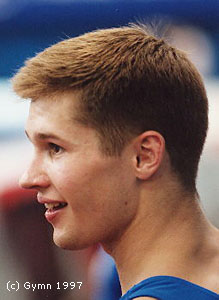

Alexei Nemov (RUS)
2000 Olympic AA Champion
1996 Olympic V Gold Medalist and AA Silver
Medalist

Medal Total
- Olympic Games: 4
Gold, 2 Silver, 6 Bronze
- World Championships: 5
Gold, 4 Silver, 3 Bronze
- European Championships: 2
Gold, 1 Bronze
World Cup: 1 Gold, 1 Silver
Nemov was born on May 28, 1976 in Togliatti.
His coach was Evgeny Nikolko at the Army Club. He and his wife, Galina, have a son (Alexei)
who was born just prior to the 2000 Olympics.
Competition Results
- 1991
Jr. GER-USSR Dual Meet: 7th AA (reserve)
1992
Jr. European Team Championships: 1st Team
- Jr. RUS-GER Dual Meet: 1st AA
Tuscon Invitational (jr. elite division): 1st AA
-
- 1993
Blume Memorial: 2nd AA
- World Championships: 15th AA, 5th FX
- World Stars: 3rd AA
-
- 1994
- Blume Memorial: 2nd AA
DTB Cup: 4th FX
- European Championships: 4th AA, 1st PB,
6th HB
- Goodwill Games: 1st AA, 1st FX, 1st PH, 3rd
PB
- World Championships (Brisbane): 12th
AA, 3rd PB
- World Championships (Dortmund): 2nd Team
World Stars: 3rd AA, 1st HB, 2nd PB, 3rd PH
-
- 1995
Blume Memorial: 4th AA
Cottbus International: 2nd V, 6th FX, 6th PB, 7th R
DTB Cup: 1st V, 3rd PB, 6th FX, 8th PH
- French International: 9th AA
- ITA-RUS Dual Meet: 12th AA
- RUS Championships: 3rd AA
World Championships: 4th Team, 1st V, 7th FX
-
- 1996
Cottbus International: 1st PB, 4th HB, 5th PH, 5th V
DTB Cup: 1st V, 1st PB, 2nd HB, 4th FX, 7th PH
- Olympic Games: 1st Team, 2nd AA, 1st
V, 3rd FX, 3rd PH, 3rd HB, 4th PB
- RUS Championships: 1st AA
Swiss Cup: 1st FX, 2nd PH, 2nd V, 6th PB
World Championships: 1st V, 2nd PB, 3rd PH
- World Stars: 1st AA, 1st PH, 1st PB
-
- 1997
Blume Memorial: 7th AA
Chunichi Cup: 5th AA, 2nd FX, 2nd HB, 3rd V
DTB Cup: 1st V, 2nd FX, 4th HB, 5th PB, 8th PH
Swiss Cup: 3rd FX, 3rd V, 3rd HB, 7th PB, 8th PH
- World Championships: 3rd Team,
26th AA, 1st FX
1998
DTB Cup: 1st FX, 1st V, 7th HB
European Championships: 3rd AA, 1st FX, 6th V
Gander Memorial: 5th AA
Goodwill Games: 1st FX, 2nd HB, 5th V
Swiss Cup: 1st FX, 4th V, 6th PH, 8th HB
World Cup: 1st V, 2nd FX, 7th PH, 7th HB
1999
Cottbus International: 2nd PH, 3rd FX, 5th V
DTB Cup: 1st FX, 2nd PH, 4th HB
French Invitational: 6th AA
Samboo Cup: 7th FX
Swiss Cup: 1st FX, 1st PH
University Games: 8th PH
World Championships: 2nd Team, 6th AA, 1st FX, 1st PH
2000
Cottbus International: 3rd FX
European Championships: 5th AA, 6th PH, 8th FX
Olympic Games: 3rd Team, 1st AA, 1st HB, 2nd FX,
3rd PH, 3rd PB, 4th V
RUS Cup: 2nd AA
World Stars: 1st AA
Zenith Tournament: 5th FX, 5th HB
2001
DTB Cup: 2nd PB, 2nd HB
Goodwill Games: 5th FX, 7th HB
Reese's International: 8th AA
World Championships: 7th Team
World Stars: 4th HB
2002
American Cup: 6th AA
European Championships: 1st FX, 4th PB
2003
Voronin Cup: 1st HB
World Championships: 4th Team, 2nd PB, 3rd HB
2004
Olympic Games: 6th Team, 5th HB
- This page was created on April 19, 1997 and was last
updated on August 13, 2005.
© Gymn Forum